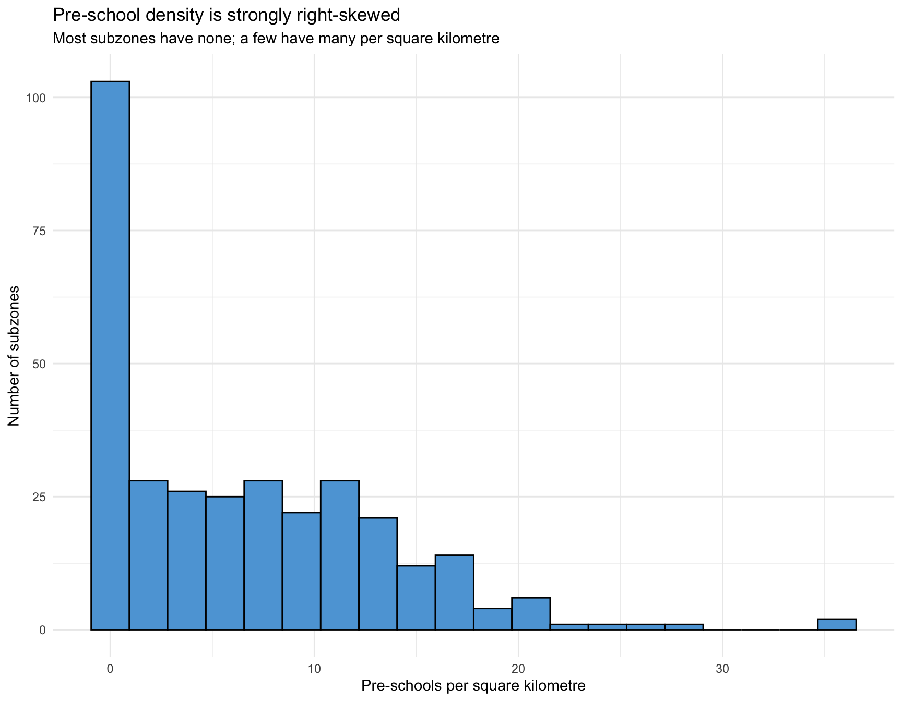
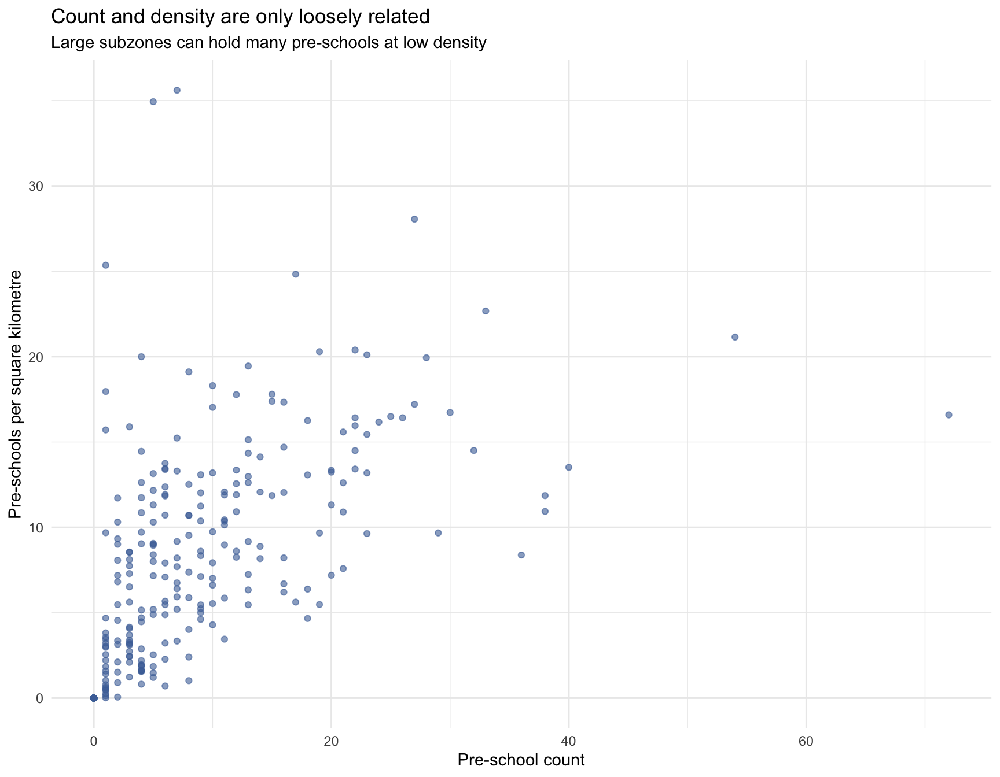
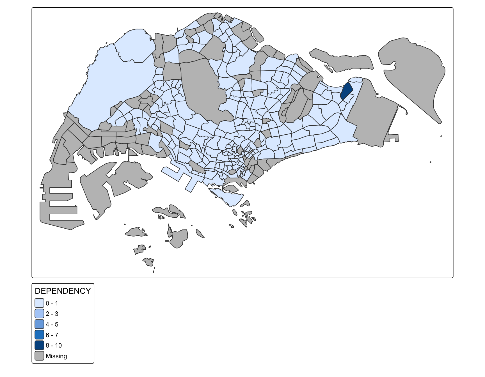
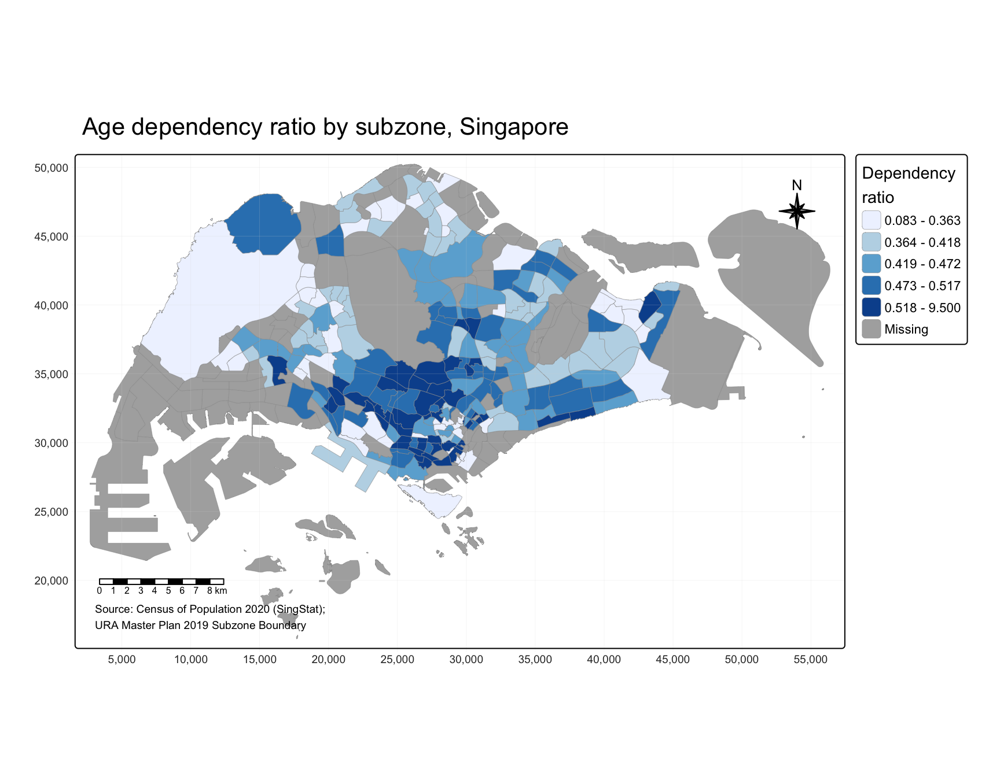
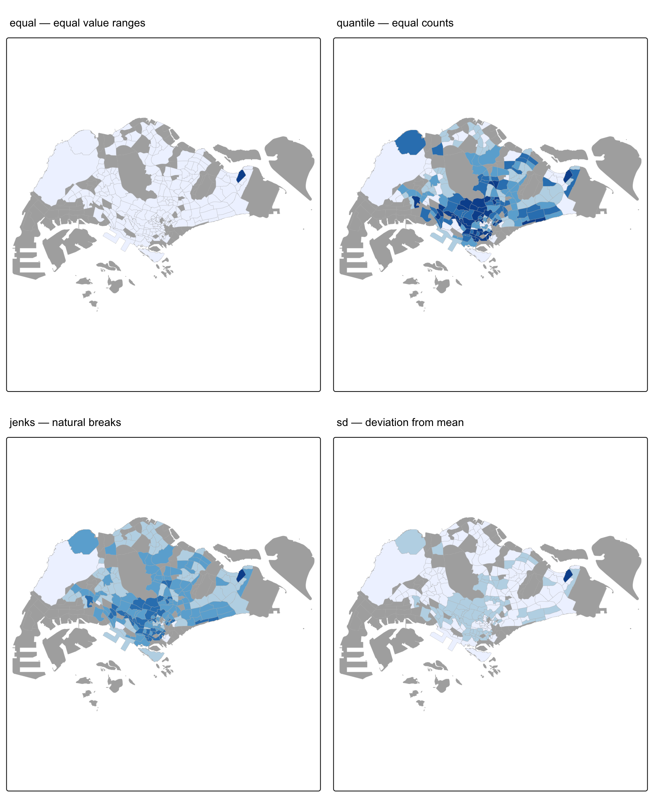
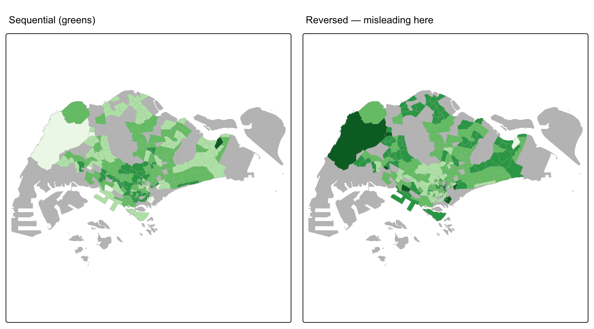
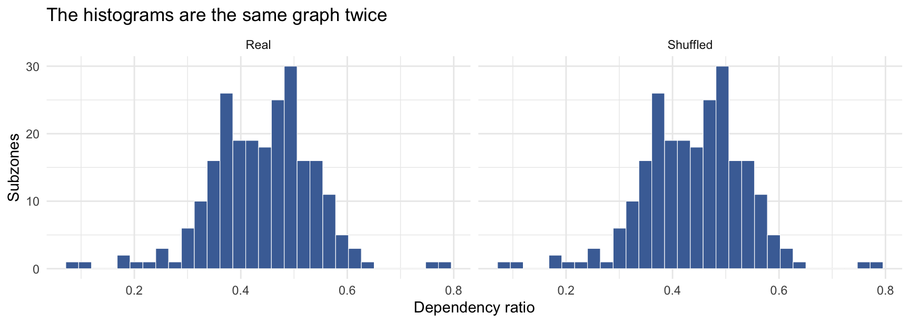
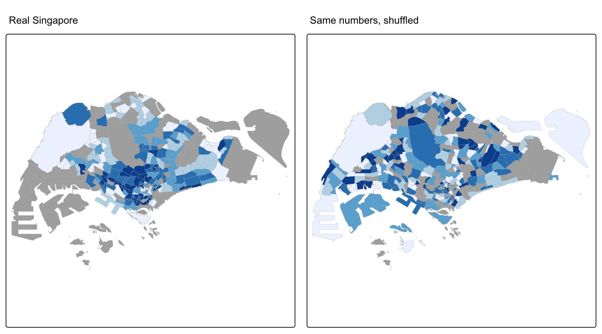
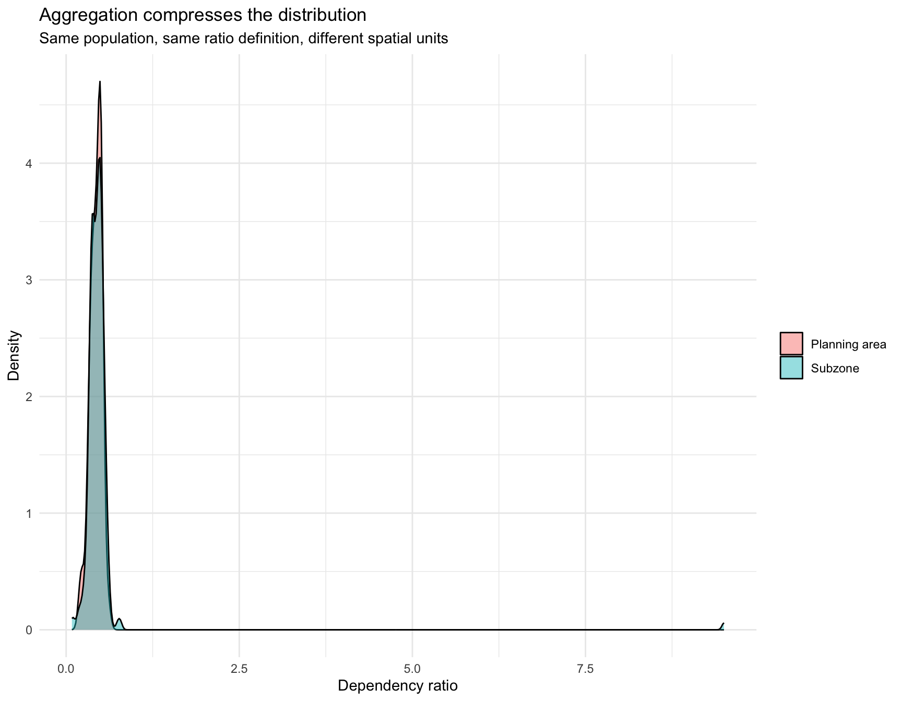
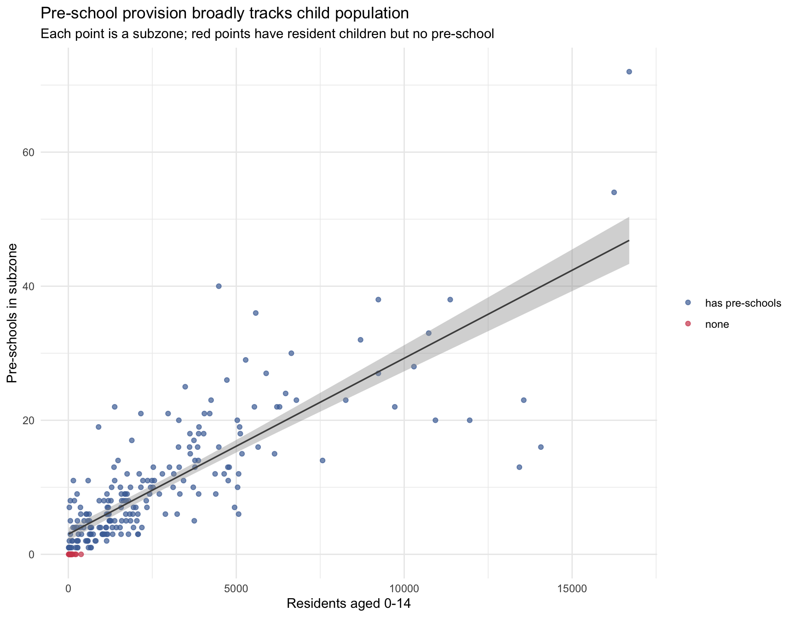

pacman::p_load(sf, tmap, tidyverse, ggplot2, knitr, classInt, units)Hands-on Exercise 1
Geospatial Data Wrangling and Choropleth Mapping with R
1 Overview
This exercise has three parts.
Part 1 covers the data preparation: importing vector data from several sources, getting their coordinate reference systems to agree, converting a table of coordinates into a spatial object, and answering two questions using geoprocessing.
Part 2 joins population data to the subzone boundaries and maps it as a choropleth. Most of the work there is about choosing a classification scheme rather than accepting the default.
Part 3 goes beyond what the chapters ask for. I wanted to check how much the conclusions depend on the classification I picked, whether the pattern holds when the spatial units change, and whether bringing in a second dataset could explain the pattern instead of just describing it.
NoteReference
NoteAnselin’s four types of spatial data
The pre-lesson lecture by Luc Anselin, “Spatial Data, Spatial Analysis, Spatial Data Science”, sets out four types of spatial data. Three of them show up in this exercise:
| Anselin’s type | In this exercise | Note |
|---|---|---|
| Points | Pre-schools, Airbnb listings | He separates points that are events (crimes, accidents) from points that are locations of objects (stores, facilities). Ours are the second kind |
| Lattice / areal units | Subzone polygons | His term for administrative zones. Relevant later, since MAUP is a lattice problem |
| Networks | Cycling paths | Nodes and links. Treated as plain lines here. Network-constrained analysis comes in Lesson 7 |
| Surfaces | not used | Continuous fields needing interpolation, like air quality or price surfaces |
He also names the standard that the sf package implements: the Simple Features specification from the Open Geospatial Consortium. That is where the name “sf” comes from, and why every function starts with st_ (spatial type).
He also poses the problem that §“How many pre-schools are in each subzone?” solves below: “You look at the map, you know immediately that city is in that county. How would a computer know that that point is inside that polygon?” In R, the answer is st_intersects().
NoteXie et al. on the three foundations
The second pre-lesson reading, Xie et al. (2017), “Transdisciplinary Foundations of Geospatial Data Science”, argues that every geospatial technique rests on three foundations, and that problems arise when any of them is treated as a black box. All three appear in this exercise:
| Foundation | Their concern | Where it appears below |
|---|---|---|
| Mathematics | Geometry, topology, projection | The CRS transform to EPSG:3414, and st_intersects() as a topological predicate rather than a lookup |
| Statistics | Spatial data violate the i.i.d. assumption most methods rely on | The correlation in Part 3, and the caveat attached to it |
| Computer science | Efficiency, scalability, filter-and-refine | st_intersects() builds a spatial index instead of testing 323 × 2,290 pairs |
One warning from the paper is useful throughout: “traditional density-based clustering methods will generally output chance patterns if applied to geospatial hotspot detection”. K-means will find clusters in pure noise, so finding a pattern is not by itself evidence that one exists. Anselin makes the same point with his shuffled map.
2 Getting started
Note
pacman::p_load() versus library()
p_load() installs a package if it is missing and then loads it. That means the document will still run on a machine that does not already have every dependency installed, which matters more for a reproducible report than the couple of keystrokes it saves.
2.1 Note on tmap versions
The course materials are written for tmap v3, but the version installed on my machine is v4, where several function names and the whole scale and legend argument system changed. The v3 code still runs through a compatibility layer, but it prints [v3->v4] deprecation messages constantly, which made the output hard to read.
I used v4 syntax throughout. These are the substitutions I made:
| v3 | v4 |
|---|---|
tm_fill(col = "X", style = "quantile", palette = "Blues") |
tm_polygons(fill = "X", fill.scale = tm_scale_intervals(style = "quantile", values = "brewer.blues")) |
tm_layout(main.title = "...") |
tm_title("...") |
tm_scale_bar() |
tm_scalebar() |
tm_polygons(col = "X") |
tm_polygons(fill = "X"), since col now sets the border colour |
packageVersion("tmap")[1] '4.4.1'3 Data provenance
ImportantThe dataset named in the chapter has no file attached
Chapter 1 specifies Master Plan 2014 Subzone Boundary (Web). Its collection page is still live on data.gov.sg, but there is no dataset file attached to it. The collections API reports zero child datasets for it, while every comparable collection (MP2019 Subzone No Sea, MP2019 Region No Sea, and the others in the series) reports one. So the page can be browsed but the data cannot be downloaded.
NoteHow I checked, including the wrong way
My first check was the older URL data.gov.sg/dataset/master-plan-2014-subzone-boundary-web, which returns “Dataset not found”. I initially took that as proof the dataset had been withdrawn, but it isn’t. That older /dataset/<slug> route returns the same error for datasets that are definitely still available, including Pre-Schools Location and MP2014 (No Sea), both of which I downloaded for this exercise without any trouble.
The check that actually works is the current API, which distinguishes a collection that has files from one that is empty:
https://api-production.data.gov.sg/v2/public/api/collections/{id}/metadata → childDatasets[]I am recording this because the wrong conclusion was easy to reach and looked well evidenced at the time.
I made two substitutions, and have recorded both rather than changing them silently:
Master Plan 2014 Subzone Boundary (No Sea) (
d_226cacceceff94f0c8b814962a5307c9) replaces the (Web) variant in Part 1. Both use the same 2014 boundary definition and differ in where the polygons stop at the coast. “(No Sea)” is clipped to the coastline, while “(Web)” is the version published on URA’s website and OneMap, where coastal subzones extend out over territorial waters.⚠️ URA’s published descriptions of the two variants are almost identical boilerplate and do not actually state this difference. I am going by the naming convention, and I cannot check it against the (Web) file since that file is not downloadable. What I can measure is that the (No Sea) layer totals 782 km² against Singapore’s ~734 km² land area, the excess being reservoirs and inland water.
For this exercise (No Sea) is the better choice anyway. Sea polygons contain no pre-schools but would increase subzone areas, which would distort the density measure.
Master Plan 2019 Subzone Boundary (No Sea) is used for Part 2, matching the current chapter 2 text.
Separately, data.gov.sg now serves GeoJSON where the chapter expects shapefile or KML. Prof Kam confirmed on Piazza that this is fine. GeoJSON is a single self-describing file that always declares WGS84 by specification, whereas a shapefile is a bundle of several files whose .prj component can be missing or wrong, which is the same failure mode the CRS section below deals with.
| Dataset | Source | Format | Retrieved | Native CRS |
|---|---|---|---|---|
| Master Plan 2014 Subzone Boundary (No Sea) | data.gov.sg (URA) | GeoJSON | 25 Aug 2026 | WGS84 (EPSG:4326) |
| Master Plan 2019 Subzone Boundary (No Sea) | data.gov.sg (URA) | GeoJSON | 25 Aug 2026 | WGS84 (EPSG:4326) |
| Pre-Schools Location | data.gov.sg (ECDA) | GeoJSON | 25 Aug 2026 | WGS84 (EPSG:4326) |
| Cycling Path Network | data.gov.sg (LTA) | GeoJSON | 25 Aug 2026 | WGS84 (EPSG:4326) |
| Singapore Airbnb listings | Inside Airbnb, 29 Jun 2026 snapshot | CSV | 25 Aug 2026 | none — lat/long columns |
| Resident population by subzone, age and sex | data.gov.sg (SingStat, Census 2020) | CSV | 25 Aug 2026 | none — subzone name key |
All six can be downloaded without an account or API key. Each one comes from the source listed above, so this page can be reproduced from a clean machine.
4 Part 1 — Geospatial Data Wrangling
4.1 Importing geospatial data
mpsz14 <- st_read("data/geospatial/MasterPlan2014SubzoneBoundaryNoSea.geojson")Reading layer `MP14_SUBZONE_NO_SEA_PL' from data source
`/Users/AnLoc/Documents/GitHub/ISSS626-GAA/Hands-on_Ex/Hands-on_Ex01/data/geospatial/MasterPlan2014SubzoneBoundaryNoSea.geojson'
using driver `GeoJSON'
Simple feature collection with 323 features and 13 fields
Geometry type: MULTIPOLYGON
Dimension: XY
Bounding box: xmin: 103.6057 ymin: 1.158699 xmax: 104.0885 ymax: 1.470775
Geodetic CRS: WGS 84cyclingpath <- st_read("data/geospatial/CyclingPathNetwork.geojson")Reading layer `CYCLINGPATH' from data source
`/Users/AnLoc/Documents/GitHub/ISSS626-GAA/Hands-on_Ex/Hands-on_Ex01/data/geospatial/CyclingPathNetwork.geojson'
using driver `GeoJSON'
Simple feature collection with 8523 features and 6 fields
Geometry type: MULTILINESTRING
Dimension: XY
Bounding box: xmin: 103.637 ymin: 1.265428 xmax: 103.9664 ymax: 1.467361
Geodetic CRS: WGS 84preschool <- st_read("data/geospatial/PreSchoolsLocation.geojson")Reading layer `PreSchoolsLocation' from data source
`/Users/AnLoc/Documents/GitHub/ISSS626-GAA/Hands-on_Ex/Hands-on_Ex01/data/geospatial/PreSchoolsLocation.geojson'
using driver `GeoJSON'
Simple feature collection with 2290 features and 2 fields
Geometry type: POINT
Dimension: XYZ
Bounding box: xmin: 103.6878 ymin: 1.247759 xmax: 103.9897 ymax: 1.462134
z_range: zmin: 0 zmax: 0
Geodetic CRS: WGS 84
TipWhat
st_read() prints
There are three useful things in that output.
Feature count and geometry type. 323 POLYGON subzones, 8,523 LINESTRING cycling paths and 2,290 POINT pre-schools. The geometry type limits which operations make sense. You can buffer a line, but computing its area would be meaningless.
The bounding box. The values here are around 103.6 to 104.1 and 1.2 to 1.5, which are longitude and latitude in degrees. If they were in the hundreds of thousands they would be metres in a projected system. This is the quickest way to check the data arrived in the CRS you expected.
The declared CRS. WGS 84 in all three cases. The next section covers why that is a problem.
4.2 Inspecting the feature data frame
An sf object is a data frame with an extra geometry column. All the dplyr verbs work on it, and the geometry stays attached to the rows as you filter and mutate.
st_geometry(mpsz14)Geometry set for 323 features
Geometry type: MULTIPOLYGON
Dimension: XY
Bounding box: xmin: 103.6057 ymin: 1.158699 xmax: 104.0885 ymax: 1.470775
Geodetic CRS: WGS 84
First 5 geometries:glimpse(mpsz14)Rows: 323
Columns: 14
$ OBJECTID_1 <int> 21, 22, 23, 24, 25, 26, 27, 28, 29, 30, 31, 32, 33, 34, 3…
$ SUBZONE_NO <int> 2, 2, 3, 4, 5, 4, 10, 12, 4, 6, 1, 1, 3, 8, 3, 7, 9, 2, 1…
$ SUBZONE_N <chr> "PEOPLE'S PARK", "BUKIT MERAH", "CHINATOWN", "PHILLIP", "…
$ SUBZONE_C <chr> "OTSZ02", "BMSZ02", "OTSZ03", "DTSZ04", "DTSZ05", "OTSZ04…
$ CA_IND <chr> "Y", "N", "Y", "Y", "Y", "Y", "N", "Y", "N", "Y", "Y", "Y…
$ PLN_AREA_N <chr> "OUTRAM", "BUKIT MERAH", "OUTRAM", "DOWNTOWN CORE", "DOWN…
$ PLN_AREA_C <chr> "OT", "BM", "OT", "DT", "DT", "OT", "BM", "DT", "BM", "DT…
$ REGION_N <chr> "CENTRAL REGION", "CENTRAL REGION", "CENTRAL REGION", "CE…
$ REGION_C <chr> "CR", "CR", "CR", "CR", "CR", "CR", "CR", "CR", "CR", "CR…
$ INC_CRC <chr> "B4120D23006C932A", "1C51019439A68700", "0FF1661344C84AED…
$ FMEL_UPD_D <chr> "20160511160621", "20160511160621", "20160511160621", "20…
$ SHAPE_1.AREA <dbl> 93140.44, 411722.82, 587222.68, 39437.94, 188767.49, 1330…
$ SHAPE_1.LEN <dbl> 1822.1927, 3074.9632, 4297.5999, 871.5549, 1872.7522, 160…
$ geometry <MULTIPOLYGON [°]> MULTIPOLYGON (((103.8432 1...., MULTIPOLYGON…head(mpsz14, n = 3)Simple feature collection with 3 features and 13 fields
Geometry type: MULTIPOLYGON
Dimension: XY
Bounding box: xmin: 103.8131 ymin: 1.274155 xmax: 103.8492 ymax: 1.285248
Geodetic CRS: WGS 84
OBJECTID_1 SUBZONE_NO SUBZONE_N SUBZONE_C CA_IND PLN_AREA_N PLN_AREA_C
1 21 2 PEOPLE'S PARK OTSZ02 Y OUTRAM OT
2 22 2 BUKIT MERAH BMSZ02 N BUKIT MERAH BM
3 23 3 CHINATOWN OTSZ03 Y OUTRAM OT
REGION_N REGION_C INC_CRC FMEL_UPD_D SHAPE_1.AREA
1 CENTRAL REGION CR B4120D23006C932A 20160511160621 93140.44
2 CENTRAL REGION CR 1C51019439A68700 20160511160621 411722.82
3 CENTRAL REGION CR 0FF1661344C84AED 20160511160621 587222.68
SHAPE_1.LEN geometry
1 1822.193 MULTIPOLYGON (((103.8432 1....
2 3074.963 MULTIPOLYGON (((103.8221 1....
3 4297.600 MULTIPOLYGON (((103.8438 1....
NoteComparing the three inspection functions
st_geometry() shows the geometry type, bounding box and CRS, and nothing about the attributes. glimpse() shows which columns exist and what type each one is, which is how you catch a numeric field that has arrived as character. head() shows what an actual record looks like, with attributes and geometry together.
4.3 Working with projection
st_crs(mpsz14)$input[1] "WGS 84"st_crs(cyclingpath)$input[1] "WGS 84"st_crs(preschool)$input[1] "WGS 84"All three arrived as WGS84 (EPSG:4326), a geographic CRS whose units are degrees, which is not usable for anything involving distance or area. A one-degree buffer would be roughly 111 km, and near the equator a degree of longitude and a degree of latitude are not the same distance on the ground anyway.
Singapore’s national projected CRS is SVY21, EPSG:3414, and its units are metres.
mpsz14 <- st_transform(mpsz14, crs = 3414)
cyclingpath <- st_transform(cyclingpath, crs = 3414)
preschool <- st_transform(preschool, crs = 3414)
st_bbox(mpsz14) xmin ymin xmax ymax
2667.538 15748.721 56396.440 50256.334 The bounding box now shows six-figure easting and northing values instead of degrees, so the transform worked.
ImportantDifference between
st_set_crs() and st_transform()
These two are easy to confuse and I want to be able to state the difference precisely.
st_set_crs() changes the label on the coordinates without touching the numbers. It asserts that the numbers were always in that system. It should only be used when the data arrived with a missing or wrong CRS tag and you know what the correct one is.
st_transform() changes the numbers, recalculating every coordinate into the target system. It is what you use when you actually need the data in a different CRS.
Using the wrong one produces no error and no warning. You just get a layer sitting off the coast of Africa, or distances wrong by a factor of 100,000, and nothing downstream will flag it.
4.4 Trying the KML version
When a classmate asked on Piazza whether GeoJSON was acceptable given that data.gov.sg no longer serves KML, Prof Kam replied: “It is fine. However, there is nothing wrong to explore the kml very. You will learn more by trying.”
So I tried it. Writing one layer out to KML and reading it straight back shows what the format costs.
dir.create("data/geospatial/kml", recursive = TRUE, showWarnings = FALSE)
st_write(mpsz14,
"data/geospatial/kml/MP14_Subzone.kml",
driver = "KML",
delete_dsn = TRUE,
quiet = TRUE)
mpsz14_kml <- st_read("data/geospatial/kml/MP14_Subzone.kml", quiet = TRUE)tibble(
aspect = c("Number of attribute columns", "Column names", "CRS", "Feature count"),
geojson = c(as.character(ncol(mpsz14) - 1),
paste(head(setdiff(names(mpsz14), "geometry"), 4), collapse = ", "),
st_crs(mpsz14)$input,
as.character(nrow(mpsz14))),
kml = c(as.character(ncol(mpsz14_kml) - 1),
paste(head(setdiff(names(mpsz14_kml), "geometry"), 4), collapse = ", "),
st_crs(mpsz14_kml)$input,
as.character(nrow(mpsz14_kml)))
) %>%
kable(caption = "What survives a round trip through KML")| aspect | geojson | kml |
|---|---|---|
| Number of attribute columns | 13 | 2 |
| Column names | OBJECTID_1, SUBZONE_NO, SUBZONE_N, SUBZONE_C | Name, Description |
| CRS | EPSG:3414 | WGS 84 |
| Feature count | 323 | 323 |
ImportantWhat changed after the KML round trip
The attribute table collapsed. All the named columns, SUBZONE_N, PLN_AREA_N, REGION_N and the rest, were flattened into a generic Name field and a Description field containing an HTML fragment. The geometry came back intact but the schema did not. To analyse the result I would have to parse the attributes back out of HTML strings, which is the same state the Pre-Schools GeoJSON arrives in.
The CRS reverted to WGS84. The KML specification requires WGS84, so st_write() reprojected out of the SVY21 metres I had just transformed into, without warning me. Reading it back gives degrees again, and every buffer and area calculation in this document would be wrong until I transformed it a second time.
This does not mean KML is bad, just that it is a presentation format, designed for drawing things in Google Earth where a person reads the description bubble. GeoJSON and shapefile are analysis formats that keep typed attribute columns and let you declare a projected CRS. The chapter’s instruction to use shapefile or KML predates data.gov.sg switching to GeoJSON, and for this work GeoJSON is the best of the three.
4.5 Importing and converting aspatial data
listings <- read_csv("data/aspatial/listings.csv", show_col_types = FALSE)
glimpse(listings)Rows: 3,247
Columns: 19
$ id <dbl> 71609, 71896, 71903, 294281, 344803, 36…
$ name <chr> "Ensuite Room (Room 1 & 2) near EXPO", …
$ host_id <dbl> 367042, 367042, 367042, 1521514, 367042…
$ host_profile_id <dbl> 1.462517e+18, 1.462517e+18, 1.462517e+1…
$ host_name <chr> "Belinda", "Belinda", "Belinda", "Elizb…
$ neighbourhood_group <chr> "East Region", "East Region", "East Reg…
$ neighbourhood <chr> "Tampines", "Tampines", "Tampines", "Ne…
$ latitude <dbl> 1.34537, 1.34754, 1.34531, 1.31142, 1.3…
$ longitude <dbl> 103.9589, 103.9596, 103.9610, 103.8392,…
$ room_type <chr> "Private room", "Private room", "Privat…
$ price <dbl> NA, NA, NA, 32, 15, NA, 26, 11, 28, 48,…
$ minimum_nights <dbl> 92, 92, 92, 92, 92, 92, 92, 92, 92, 92,…
$ number_of_reviews <dbl> 19, 24, 46, 131, 60, 81, 163, 20, 0, 17…
$ last_review <date> 2020-01-17, 2019-10-13, 2020-01-09, 20…
$ reviews_per_month <dbl> 0.11, 0.13, 0.25, 0.75, 0.34, 0.52, 0.9…
$ calculated_host_listings_count <dbl> 5, 5, 5, 7, 5, 7, 7, 4, 2, 1, 8, 1, 73,…
$ availability_365 <dbl> 90, 90, 90, 364, 364, 364, 364, 364, 36…
$ number_of_reviews_ltm <dbl> 0, 0, 0, 0, 0, 0, 0, 0, 0, 0, 0, 0, 0, …
$ license <chr> NA, NA, NA, NA, NA, NA, NA, NA, NA, NA,…The file has latitude and longitude columns but no geometry, so R treats it as an ordinary table. st_as_sf() converts it into a spatial object.
listings_sf <- st_as_sf(listings,
coords = c("longitude", "latitude"),
crs = 4326) %>%
st_transform(crs = 3414)
glimpse(listings_sf)Rows: 3,247
Columns: 18
$ id <dbl> 71609, 71896, 71903, 294281, 344803, 36…
$ name <chr> "Ensuite Room (Room 1 & 2) near EXPO", …
$ host_id <dbl> 367042, 367042, 367042, 1521514, 367042…
$ host_profile_id <dbl> 1.462517e+18, 1.462517e+18, 1.462517e+1…
$ host_name <chr> "Belinda", "Belinda", "Belinda", "Elizb…
$ neighbourhood_group <chr> "East Region", "East Region", "East Reg…
$ neighbourhood <chr> "Tampines", "Tampines", "Tampines", "Ne…
$ room_type <chr> "Private room", "Private room", "Privat…
$ price <dbl> NA, NA, NA, 32, 15, NA, 26, 11, 28, 48,…
$ minimum_nights <dbl> 92, 92, 92, 92, 92, 92, 92, 92, 92, 92,…
$ number_of_reviews <dbl> 19, 24, 46, 131, 60, 81, 163, 20, 0, 17…
$ last_review <date> 2020-01-17, 2019-10-13, 2020-01-09, 20…
$ reviews_per_month <dbl> 0.11, 0.13, 0.25, 0.75, 0.34, 0.52, 0.9…
$ calculated_host_listings_count <dbl> 5, 5, 5, 7, 5, 7, 7, 4, 2, 1, 8, 1, 73,…
$ availability_365 <dbl> 90, 90, 90, 364, 364, 364, 364, 364, 36…
$ number_of_reviews_ltm <dbl> 0, 0, 0, 0, 0, 0, 0, 0, 0, 0, 0, 0, 0, …
$ license <chr> NA, NA, NA, NA, NA, NA, NA, NA, NA, NA,…
$ geometry <POINT [m]> POINT (41972.5 36390.05), POINT (…
Warning
coords takes longitude first
The argument is coords = c("longitude", "latitude"), x before y. Writing c("latitude","longitude") does not throw an error. It just places every Singapore listing at about 1°E, 103°N, which is in the Arctic Ocean north of Norway.
The crs = 4326 argument here is doing the labelling job described in the previous section. The numbers are already in degrees, so I tag them correctly first and only then transform to metres. Setting crs = 3414 at this point would claim the degree values were metres and put every listing within a kilometre of the origin.
st_bbox(listings_sf) xmin ymin xmax ymax
5881.388 22827.701 44899.773 48821.856 The bounding box falls within Singapore, so the coordinate order was right.
4.6 Geoprocessing
4.6.1 How much land is within 5 m of a cycling path?
This is a buffer and area problem. The scenario is that LTA wants to know how much land would be needed to widen the entire cycling network by 5 m on each side.
buffer_cycling <- st_buffer(cyclingpath, dist = 5, nQuadSegs = 30)
buffer_cycling$AREA <- st_area(buffer_cycling)
sum(buffer_cycling$AREA)4989654 [m^2]total_ha <- sum(buffer_cycling$AREA) %>% units::set_units("hectares")
total_ha498.9654 [hectares]
NoteNotes on this figure
The units are carried by the object. st_area() returns a units object, so sum() reports m² explicitly and set_units() converts safely. Whether the 5 meant five metres or five degrees is exactly what the earlier transform to EPSG:3414 settled. In WGS84 this buffer would have been about 555 km wide.
This total double-counts the overlaps. Where two cycling paths run close together their buffers intersect, and summing the per-feature areas counts that shared land twice. For a land acquisition estimate the buffers should be dissolved first:
dissolved_ha <- buffer_cycling %>%
st_union() %>%
st_area() %>%
units::set_units("hectares")
dissolved_ha431.5118 [hectares]The difference between the two figures is the overlapping area, and it is not small. Reporting the first number as a land requirement would overstate it.
overlap_pct <- as.numeric((total_ha - dissolved_ha) / total_ha * 100)
sprintf("Naive sum overstates the true footprint by %.1f%%", overlap_pct)[1] "Naive sum overstates the true footprint by 13.5%"4.6.2 How many pre-schools are in each subzone?
mpsz14$PreSch_Count <- lengths(st_intersects(mpsz14, preschool))
summary(mpsz14$PreSch_Count) Min. 1st Qu. Median Mean 3rd Qu. Max.
0.00 0.00 4.00 7.09 10.00 72.00 mpsz14 %>%
st_drop_geometry() %>%
select(SUBZONE_N, PLN_AREA_N, PreSch_Count) %>%
arrange(desc(PreSch_Count)) %>%
head(10) %>%
kable(caption = "Subzones with the most pre-schools")| SUBZONE_N | PLN_AREA_N | PreSch_Count |
|---|---|---|
| TAMPINES EAST | TAMPINES | 72 |
| WOODLANDS EAST | WOODLANDS | 54 |
| ALJUNIED | GEYLANG | 40 |
| TAMPINES WEST | TAMPINES | 38 |
| BEDOK NORTH | BEDOK | 38 |
| FRANKEL | BEDOK | 36 |
| SENGKANG TOWN CENTRE | SENGKANG | 33 |
| YUNNAN | JURONG WEST | 32 |
| HONG KAH | JURONG WEST | 30 |
| BEDOK SOUTH | BEDOK | 29 |
NoteWhat
st_intersects() returns
It does not return a count. It returns a list with one element per subzone, each holding the row indices of every pre-school that falls inside it. lengths(), plural, then measures each element of that list. Using length() instead would return a single number, 323, which is just the number of subzones.
The list of indices is more useful than a count would be, since it lets you go back and ask which pre-schools rather than only how many.
4.6.3 Pre-school density
mpsz14$Area_sqkm <- st_area(mpsz14) %>%
units::set_units("km^2") %>%
as.numeric()
mpsz14$PreSch_Density <- mpsz14$PreSch_Count / mpsz14$Area_sqkm
mpsz14 %>%
st_drop_geometry() %>%
select(SUBZONE_N, PreSch_Count, Area_sqkm, PreSch_Density) %>%
arrange(desc(PreSch_Density)) %>%
head(10) %>%
mutate(across(where(is.numeric), ~round(.x, 2))) %>%
kable(caption = "Highest pre-school density (per km squared)")| SUBZONE_N | PreSch_Count | Area_sqkm | PreSch_Density |
|---|---|---|---|
| CECIL | 7 | 0.20 | 35.60 |
| MANDAI ESTATE | 5 | 0.14 | 34.93 |
| SEMBAWANG CENTRAL | 27 | 0.96 | 28.05 |
| PHILLIP | 1 | 0.04 | 25.36 |
| SERANGOON NORTH | 17 | 0.68 | 24.83 |
| SENGKANG TOWN CENTRE | 33 | 1.46 | 22.67 |
| WOODLANDS EAST | 54 | 2.55 | 21.15 |
| KATONG | 22 | 1.08 | 20.39 |
| MIDVIEW | 19 | 0.94 | 20.29 |
| KEAT HONG | 23 | 1.14 | 20.11 |
Density and count rank the subzones quite differently. The highest count is in a large residential town, while the highest density tends to be a small, dense subzone. Which measure is right depends on whether the question is about provision relative to land area or provision in absolute terms.
4.7 Exploratory data analysis
ggplot(data = mpsz14, aes(x = PreSch_Density)) +
geom_histogram(bins = 20, color = "black", fill = "#5DA5DA") +
labs(title = "Pre-school density is strongly right-skewed",
subtitle = "Most subzones have none; a few have many per square kilometre",
x = "Pre-schools per square kilometre",
y = "Number of subzones") +
theme_minimal()
This skew turns out to matter a lot in Part 2. A variable shaped like this gets classified very differently by an equal-interval scheme than by a quantile scheme, which is what the classification section tests.
ggplot(data = mpsz14, aes(x = PreSch_Count, y = PreSch_Density)) +
geom_point(alpha = 0.6, color = "#4A6FA5") +
labs(title = "Count and density are only loosely related",
subtitle = "Large subzones can hold many pre-schools at low density",
x = "Pre-school count", y = "Pre-schools per square kilometre") +
theme_minimal()
5 Part 2 — Choropleth Mapping
5.1 Importing the data
mpsz19 <- st_read("data/geospatial/MasterPlan2019SubzoneBoundaryNoSea.geojson") %>%
st_transform(crs = 3414)Reading layer `URA_MP19_SUBZONE_NO_SEA_PL' from data source
`/Users/AnLoc/Documents/GitHub/ISSS626-GAA/Hands-on_Ex/Hands-on_Ex01/data/geospatial/MasterPlan2019SubzoneBoundaryNoSea.geojson'
using driver `GeoJSON'
Simple feature collection with 332 features and 13 fields
Geometry type: MULTIPOLYGON
Dimension: XY
Bounding box: xmin: 103.6057 ymin: 1.158699 xmax: 104.0885 ymax: 1.470775
Geodetic CRS: WGS 84popdata <- read_csv("data/aspatial/respop_census2020_agesex.csv", show_col_types = FALSE)
dim(popdata)[1] 388 61The table is in wide format, with one row per area and one column for each age band crossed with sex. The Number column holds the area name. Planning-area rows are marked with a " - Total" suffix and subzone rows just carry a bare name.
popdata %>% select(Number, Total_Total, Total_0_4, Total_65_69) %>% head(6) %>% kable()| Number | Total_Total | Total_0_4 | Total_65_69 |
|---|---|---|---|
| Total | 4044210 | 183080 | 229400 |
| Ang Mo Kio - Total | 162280 | 5280 | 11960 |
| Ang Mo Kio Town Centre | 4810 | 170 | 250 |
| Cheng San | 28070 | 1060 | 2170 |
| Chong Boon | 26500 | 860 | 2100 |
| Kebun Bahru | 22620 | 660 | 1690 |
5.1.1 Every count column arrived as text
sum(sapply(popdata, is.character))[1] 61All 61 columns came in as character, including the population counts. The cause is one token: SingStat writes suppressed or zero cells as -, and that forces readr to type the whole column as text.
WarningWhy the columns imported as text
rowSums() on character columns errors immediately, which is the lucky outcome. The version that would have caused real trouble is code that coerces silently and returns a wrong number that looks plausible.
as.numeric("-") returns NA rather than zero. A straight conversion would push NA through every age band containing a suppressed cell and quietly drop those subzones from the map. I read - as zero here, since the census uses it where the count is nil or has been suppressed for disclosure control, and both cases mean there is no meaningful population in that cell.
to_count <- function(x) {
x <- str_replace_all(x, ",", "") # thousands separators, if any
x[x == "-"] <- "0" # suppressed / nil
as.numeric(x)
}
popdata <- popdata %>%
mutate(across(-Number, to_count))
sum(sapply(popdata, is.character))[1] 1Only Number is still character, which is correct since it holds the area name.
5.2 Computing the dependency ratio
The age dependency ratio is the number of people not usually in the labour force, meaning children under 15 and adults 65 and over, per person of working age.
\[\text{Dependency} = \frac{\text{population}_{0-14} + \text{population}_{65+}}{\text{population}_{15-64}}\]
young_cols <- c("Total_0_4", "Total_5_9", "Total_10_14")
active_cols <- c("Total_15_19","Total_20_24","Total_25_29","Total_30_34","Total_35_39",
"Total_40_44","Total_45_49","Total_50_54","Total_55_59","Total_60_64")
aged_cols <- c("Total_65_69","Total_70_74","Total_75_79","Total_80_84",
"Total_85_89","Total_90andOver")
popdata_sz <- popdata %>%
filter(Number != "Total",
!str_detect(Number, " - Total$")) %>%
mutate(
SUBZONE_N = toupper(str_trim(Number)),
YOUNG = rowSums(across(all_of(young_cols))),
ACTIVE = rowSums(across(all_of(active_cols))),
AGED = rowSums(across(all_of(aged_cols))),
TOTAL = Total_Total,
DEPENDENCY = (YOUNG + AGED) / ACTIVE
) %>%
select(SUBZONE_N, YOUNG, ACTIVE, AGED, TOTAL, DEPENDENCY)
nrow(popdata_sz)[1] 3335.3 Joining the population data to the boundaries
mpsz_pop <- left_join(mpsz19 %>% mutate(SUBZONE_N = toupper(SUBZONE_N)),
popdata_sz,
by = "SUBZONE_N")
n_total <- nrow(mpsz_pop)
n_unmatched <- sum(is.na(mpsz_pop$TOTAL))
n_zero_act <- sum(mpsz_pop$ACTIVE == 0, na.rm = TRUE)
tibble(
metric = c("Subzone polygons", "No population record", "Matched but zero working-age population"),
n = c(n_total, n_unmatched, n_zero_act)
) %>% kable(caption = "Join diagnostics")| metric | n |
|---|---|
| Subzone polygons | 332 |
| No population record | 0 |
| Matched but zero working-age population | 98 |
WarningChecking the join
Two boundary definitions are being reconciled here. The population table is keyed to Census 2020 subzone names and the polygons to Master Plan 2019, so some level of non-match is expected. The toupper() call on both sides removes a case mismatch that would otherwise have failed most of the join without any error.
The rows with zero working-age population matter more than they first appear. Dependency is a ratio with ACTIVE in the denominator, so those subzones produce Inf rather than a large number. Industrial estates, reservoirs and military areas genuinely have no residents. Mapping Inf shows up as an unclassified hole, whereas mapping it as a high value would be inventing data.
mpsz_pop %>%
st_drop_geometry() %>%
filter(is.na(TOTAL)) %>%
select(SUBZONE_N, PLN_AREA_N) %>%
head(10) %>%
kable(caption = "Sample of subzones with no matching population record")| SUBZONE_N | PLN_AREA_N |
|---|
mpsz_pop <- mpsz_pop %>%
mutate(DEPENDENCY = ifelse(is.finite(DEPENDENCY), DEPENDENCY, NA_real_))
summary(mpsz_pop$DEPENDENCY) Min. 1st Qu. Median Mean 3rd Qu. Max. NAs
0.08333 0.37552 0.44734 0.47927 0.50000 9.50000 98
NoteChoropleth as a histogram with location
Anselin’s definition is the one I found most useful: a choropleth is a histogram with the location made explicit. “Rather than just having a histogram as such, we will know where these bars for the histogram are in geographical space.”
This is useful in two places below. It explains why classification matters, since choosing class breaks is the same act as choosing histogram bins, and nobody would accept arbitrary bins on a histogram. It also sets up the test in Part 3, because if a map and a histogram carried the same information then the map would add nothing.
5.4 Plotting a choropleth quickly with qtm()
tmap_mode("plot")
qtm(mpsz_pop, fill = "DEPENDENCY")
This is quick and fine for looking at your own data, but not for showing anyone else. There is no title, no source, no explanation of the legend, and the classification is whatever the default happens to be.
5.5 Building the map with tmap elements
tm_shape(mpsz_pop) +
tm_polygons(fill = "DEPENDENCY",
fill.scale = tm_scale_intervals(style = "quantile", n = 5,
values = "brewer.blues"),
fill.legend = tm_legend(title = "Dependency\nratio"),
col = "grey60", lwd = 0.3,
fill.free = FALSE) +
tm_title("Age dependency ratio by subzone, Singapore") +
tm_compass(type = "8star", size = 2, position = c("right", "top")) +
tm_scalebar(position = c("left", "bottom")) +
tm_grid(lwd = 0.1, col = "grey85") +
tm_credits("Source: Census of Population 2020 (SingStat);\nURA Master Plan 2019 Subzone Boundary",
position = c("left", "bottom"), size = 0.6) +
tm_layout(frame = TRUE, legend.outside = TRUE)
NoteWhat each element is for
tm_shape() sets the data and every tm_* layer after it draws from that. tm_polygons() handles fill and border together, and in v4 fill is the thematic variable while col is the border colour. tm_grid() adds coordinate context. tm_compass() and tm_scalebar() are standard cartographic elements. tm_credits() puts the source onto the map image itself, so it stays attributable if someone pulls the figure out of this document.
5.6 Classification methods
tmap supports the standard data classification schemes. They are not just style options. Each one makes a different claim about what the reader should be noticing.
make_map <- function(style, title) {
tm_shape(mpsz_pop) +
tm_polygons(fill = "DEPENDENCY",
fill.scale = tm_scale_intervals(style = style, n = 5,
values = "brewer.blues"),
fill.legend = tm_legend(show = FALSE),
col = "grey70", lwd = 0.2) +
tm_title(title, size = 0.9)
}
tmap_arrange(
make_map("equal", "equal — equal value ranges"),
make_map("quantile", "quantile — equal counts"),
make_map("jenks", "jenks — natural breaks"),
make_map("sd", "sd — deviation from mean"),
ncol = 2
)
ImportantComparing the four classification methods
These are four maps of the same numbers.
Equal interval cuts the value range into equal-width bins. On a skewed variable this pushes almost everything into the lowest class and the map ends up looking empty.
Quantile puts an equal count of subzones into each class. It always produces a visually balanced map, including when there is no real variation to show, which is the risk with it.
Jenks minimises within-class variance and finds breaks at natural gaps in the distribution. It is usually the most faithful to the structure, but the breaks depend on the data, so two maps made this way cannot be compared to each other.
Standard deviation shows distance from the mean. It answers a different question, which areas are unusual rather than how much there is.
5.6.1 Why two of those maps look empty
vals_all <- mpsz_pop$DEPENDENCY[is.finite(mpsz_pop$DEPENDENCY)]
class_counts <- map_dfr(c("equal","quantile","jenks","sd"), function(st) {
brks <- classIntervals(vals_all, n = 5, style = st)$brks
tab <- table(cut(vals_all, unique(brks), include.lowest = TRUE))
tibble(style = st,
`class 1` = tab[1], `class 2` = tab[2], `class 3` = tab[3],
`class 4` = tab[4], `class 5` = tab[5])
})
kable(class_counts, caption = "How many subzones land in each class")| style | class 1 | class 2 | class 3 | class 4 | class 5 |
|---|---|---|---|---|---|
| equal | 233 | 0 | 0 | 0 | 1 |
| quantile | 47 | 47 | 46 | 47 | 47 |
| jenks | 10 | 82 | 95 | 46 | 1 |
| sd | 146 | 87 | 0 | 0 | 1 |
equal puts 233 of 234 subzones into the bottom class, and sd is almost as bad. Both are being distorted by one extreme value:
mpsz_pop %>%
st_drop_geometry() %>%
filter(is.finite(DEPENDENCY)) %>%
arrange(desc(DEPENDENCY)) %>%
select(SUBZONE_N, PLN_AREA_N, YOUNG, ACTIVE, AGED, DEPENDENCY) %>%
head(5) %>%
mutate(DEPENDENCY = round(DEPENDENCY, 2)) %>%
kable(caption = "The subzones driving the top of the range")| SUBZONE_N | PLN_AREA_N | YOUNG | ACTIVE | AGED | DEPENDENCY |
|---|---|---|---|---|---|
| LOYANG WEST | PASIR RIS | 0 | 20 | 190 | 9.50 |
| LAKESIDE (LEISURE) | JURONG EAST | 60 | 600 | 410 | 0.78 |
| PEARL’S HILL | OUTRAM | 550 | 3520 | 2080 | 0.75 |
| CRAWFORD | KALLANG | 660 | 5110 | 2620 | 0.64 |
| SELEGIE | ROCHOR | 20 | 130 | 60 | 0.62 |
ImportantThe effect of one outlier
The maximum dependency ratio is 9.5 against a median of 0.45, so roughly twenty times the typical value. It is not a data error. It is a subzone with very few residents where the age mix happens to be extreme, and the small denominator produces a very large ratio.
Equal-interval and standard-deviation both derive their breaks from the range, so that one subzone stretches the whole scale and every other subzone falls into the first class. Quantile and Jenks derive their breaks from the ordering and the distribution instead, so they are not affected.
The practical rule is that range-based classification fails on a variable with outliers. You either use a rank or distribution based scheme, or handle the outlier explicitly and say which you did.
5.6.2 How much does the choice actually change?
Rather than just assert that classification matters, I wanted to measure it. How many subzones actually change class when the scheme changes?
vals <- mpsz_pop$DEPENDENCY[!is.na(mpsz_pop$DEPENDENCY)]
styles <- c("equal", "quantile", "jenks", "sd")
class_assign <- sapply(styles, function(s) {
brks <- classIntervals(vals, n = 5, style = s)$brks
as.integer(cut(vals, breaks = unique(brks), include.lowest = TRUE))
})
colnames(class_assign) <- styles
pairs <- combn(styles, 2, simplify = FALSE)
sens <- map_dfr(pairs, function(p) {
changed <- mean(class_assign[, p[1]] != class_assign[, p[2]], na.rm = TRUE) * 100
tibble(comparison = paste(p[1], "vs", p[2]),
pct_subzones_changing_class = round(changed, 1))
}) %>% arrange(desc(pct_subzones_changing_class))
kable(sens, caption = "Share of subzones assigned to a different class under each pair of schemes")| comparison | pct_subzones_changing_class |
|---|---|
| equal vs jenks | 95.3 |
| jenks vs sd | 95.3 |
| equal vs quantile | 79.5 |
| quantile vs sd | 79.5 |
| quantile vs jenks | 56.4 |
| equal vs sd | 37.2 |
TipWhat the sensitivity table shows
Every one of those maps is correct. The table puts a number on how much of the visual story comes from a choice made in a single argument. Someone who saw only the equal-interval map and someone who saw only the quantile map would describe Singapore’s dependency geography differently, and neither would have any reason to know it.
For this variable I would use Jenks for exploration, since it respects the actual distribution, and quantile only when comparing across time periods, where fixed relative positions matter more than absolute breaks. Equal interval should not be used on a right-skewed variable at all.
5.7 Colour scheme
tmap_arrange(
tm_shape(mpsz_pop) +
tm_polygons(fill = "DEPENDENCY",
fill.scale = tm_scale_intervals(style = "jenks", n = 5,
values = "brewer.greens"),
fill.legend = tm_legend(show = FALSE), col = "grey70", lwd = 0.2) +
tm_title("Sequential (greens)", size = 0.9),
tm_shape(mpsz_pop) +
tm_polygons(fill = "DEPENDENCY",
fill.scale = tm_scale_intervals(style = "jenks", n = 5,
values = "-brewer.greens"),
fill.legend = tm_legend(show = FALSE), col = "grey70", lwd = 0.2) +
tm_title("Reversed — misleading here", size = 0.9),
ncol = 2
)
NoteChoosing sequential or diverging
A sequential palette says the variable runs from less to more with no meaningful midpoint. A diverging palette says there is a midpoint that matters, and that deviations on either side of it differ in kind rather than degree.
For a dependency ratio a diverging scheme can be justified if the midpoint is chosen for a reason, such as the national ratio, because being above or below the national average really are different situations. It cannot be justified if the midpoint is just the middle of the data range, since that invents a threshold that does not exist.
The reversed map above shows what goes wrong. Dark now reads as low dependency, which inverts the intuition most readers bring to a map. The code is correct and the communication is not.
6 Part 3 — Beyond the brief
6.1 Is this actually spatial analysis?
Anselin proposes a test for whether an analysis is genuinely spatial:
“If you change the location of things and it doesn’t matter, then it’s not spatial analysis. But if it does matter, then it is.”
He demonstrates it with two maps of Milwaukee, one real and one with the same values randomly shuffled between census tracts. The histograms are identical but the maps look like two different cities.
I wanted to run the same test on this data rather than take it on faith.
set.seed(1234)
mpsz_shuffled <- mpsz_pop
mpsz_shuffled$DEPENDENCY <- sample(mpsz_pop$DEPENDENCY)Every value is preserved, since sample() only reassigns which subzone holds which number. So any non-spatial summary should come out exactly the same:
tibble(
version = c("Real", "Shuffled"),
n = c(sum(is.finite(mpsz_pop$DEPENDENCY)), sum(is.finite(mpsz_shuffled$DEPENDENCY))),
mean = c(mean(mpsz_pop$DEPENDENCY, na.rm = TRUE), mean(mpsz_shuffled$DEPENDENCY, na.rm = TRUE)),
sd = c(sd(mpsz_pop$DEPENDENCY, na.rm = TRUE), sd(mpsz_shuffled$DEPENDENCY, na.rm = TRUE)),
median = c(median(mpsz_pop$DEPENDENCY, na.rm = TRUE), median(mpsz_shuffled$DEPENDENCY, na.rm = TRUE))
) %>%
mutate(across(where(is.numeric), ~round(.x, 4))) %>%
kable(caption = "Identical by every non-spatial measure")| version | n | mean | sd | median |
|---|---|---|---|---|
| Real | 234 | 0.4793 | 0.5999 | 0.4473 |
| Shuffled | 234 | 0.4793 | 0.5999 | 0.4473 |
bind_rows(
tibble(version = "Real", value = mpsz_pop$DEPENDENCY),
tibble(version = "Shuffled", value = mpsz_shuffled$DEPENDENCY)
) %>%
filter(is.finite(value), value < 2) %>%
ggplot(aes(x = value)) +
geom_histogram(bins = 30, fill = "#4A6FA5", colour = "white", linewidth = 0.2) +
facet_wrap(~version) +
labs(title = "The histograms are the same graph twice",
x = "Dependency ratio", y = "Subzones") +
theme_minimal()
Now the maps:
shuffle_map <- function(dat, ttl) {
tm_shape(dat) +
tm_polygons(fill = "DEPENDENCY",
fill.scale = tm_scale_intervals(style = "quantile", n = 5,
values = "brewer.blues"),
fill.legend = tm_legend(show = FALSE),
col = "grey70", lwd = 0.2) +
tm_title(ttl, size = 0.9)
}
tmap_arrange(shuffle_map(mpsz_pop, "Real Singapore"),
shuffle_map(mpsz_shuffled, "Same numbers, shuffled"),
ncol = 2)
ImportantWhat the shuffle test shows
The mean, standard deviation and median are identical, and so is the histogram. But the two maps look nothing alike. The real one has coherent regions of similar colour and the shuffled one is more or less visual static.
Everything separating those two images is spatial structure, and none of the conventional statistics can detect it. This seems to be the gap the rest of the course fills. Lesson 4’s spatial weights formalise what neighbouring means, and Lesson 5’s Moran’s I turns the difference between these two maps into a single number with a significance test.
It also answers a question I had at the start, which was why not just use pandas for this. A non-spatial toolkit would report these two datasets as identical, because on every measure it can compute, they are.
6.2 Does the pattern survive a change of spatial unit? (MAUP)
The Modifiable Areal Unit Problem is that statistical results change when the zoning or the scale of the spatial units changes. It applies to most of what this course covers, and it can be tested directly here because subzones nest inside planning areas.
mpsz_pa <- mpsz_pop %>%
st_drop_geometry() %>%
filter(!is.na(TOTAL)) %>%
group_by(PLN_AREA_N) %>%
summarise(YOUNG = sum(YOUNG), ACTIVE = sum(ACTIVE), AGED = sum(AGED),
n_subzones = n(), .groups = "drop") %>%
mutate(DEPENDENCY_PA = (YOUNG + AGED) / ACTIVE) %>%
filter(is.finite(DEPENDENCY_PA))
comparison <- tibble(
unit = c("Subzone", "Planning area"),
n = c(sum(is.finite(mpsz_pop$DEPENDENCY)), nrow(mpsz_pa)),
min = c(min(mpsz_pop$DEPENDENCY, na.rm = TRUE), min(mpsz_pa$DEPENDENCY_PA)),
median = c(median(mpsz_pop$DEPENDENCY, na.rm = TRUE), median(mpsz_pa$DEPENDENCY_PA)),
max = c(max(mpsz_pop$DEPENDENCY, na.rm = TRUE), max(mpsz_pa$DEPENDENCY_PA))
) %>% mutate(across(where(is.numeric), ~round(.x, 3)))
kable(comparison, caption = "The same variable at two spatial scales")| unit | n | min | median | max |
|---|---|---|---|---|
| Subzone | 234 | 0.083 | 0.447 | 9.500 |
| Planning area | 42 | 0.208 | 0.441 | 0.601 |
bind_rows(
tibble(unit = "Subzone", value = mpsz_pop$DEPENDENCY[is.finite(mpsz_pop$DEPENDENCY)]),
tibble(unit = "Planning area", value = mpsz_pa$DEPENDENCY_PA)
) %>%
ggplot(aes(x = value, fill = unit)) +
geom_density(alpha = 0.45) +
labs(title = "Aggregation compresses the distribution",
subtitle = "Same population, same ratio definition, different spatial units",
x = "Dependency ratio", y = "Density", fill = NULL) +
theme_minimal()
The planning-area distribution is noticeably narrower. Aggregating averages away the extremes, so a map drawn at planning-area level would understate how uneven dependency actually is across Singapore. Neither scale is the correct one. The best I can do is state which scale I used and note that the result depends on it.
NoteThe two components of MAUP
Anselin separates MAUP into two distinct problems:
- The scale problem. Results change with the size of the unit, which is what the table above measures, moving from subzone up to planning area.
- The zoning problem. Results change with the arrangement of the units even when their size stays constant. Redrawing the boundaries into equally sized but differently shaped subzones would move the answer again.
The standard demonstration is Openshaw’s “A Million Spatial Autocorrelation Coefficients”, which recomputed the same statistic on Iowa election data across progressively larger units and found that the magnitude changed and so did the sign.
Only the scale problem can be tested here, because Singapore’s subzones nest inside planning areas and there is no alternative zoning available. I am noting that rather than implying the test covered both.
WarningChange of support
This is Anselin’s term for combining data recorded on units that do not align. This document has a mild case of it, since Part 1 uses Master Plan 2014 boundaries and Part 2 uses 2019, which is what the chapters specify. Subzone definitions changed between the two versions, so the pre-school counts and the dependency ratios are not measured on quite the same geography.
Because of that, the cross-dataset section below recalculates pre-school counts against the 2019 boundaries instead of reusing the numbers from Part 1.
6.3 The choropleth’s built-in bias
A choropleth encodes a rate using area. The eye reads area as quantity, so large sparsely populated subzones dominate the map while the dense subzones where most people actually live barely register.
mpsz_pop %>%
st_drop_geometry() %>%
filter(!is.na(TOTAL)) %>%
mutate(area_km2 = as.numeric(units::set_units(st_area(mpsz_pop %>% filter(!is.na(TOTAL))), "km^2"))) %>%
summarise(
`Share of map area held by the least-populated half of subzones (%)` =
round(sum(area_km2[TOTAL <= median(TOTAL)]) / sum(area_km2) * 100, 1),
`Share of population they hold (%)` =
round(sum(TOTAL[TOTAL <= median(TOTAL)]) / sum(TOTAL) * 100, 1)
) %>%
pivot_longer(everything(), names_to = "measure", values_to = "value") %>%
kable()| measure | value |
|---|---|
| Share of map area held by the least-populated half of subzones (%) | 69.9 |
| Share of population they hold (%) | 2.4 |
The less-populated half of the subzones takes up most of the visual field while holding a small minority of the population. Anyone forming an impression from this map is effectively weighting land rather than people.
6.4 Does provision follow need? Joining two datasets
Everything up to this point describes the data. This section is an attempt to explain something, by asking whether pre-school provision tracks the child population. It brings the pre-school data from Part 1 together with the demographics from Part 2.
preschool_by_sz <- mpsz19 %>%
mutate(SUBZONE_N = toupper(SUBZONE_N),
PreSch_Count = lengths(st_intersects(., preschool))) %>%
st_drop_geometry() %>%
select(SUBZONE_N, PreSch_Count)
provision <- mpsz_pop %>%
st_drop_geometry() %>%
filter(!is.na(TOTAL), YOUNG > 0) %>%
left_join(preschool_by_sz, by = "SUBZONE_N") %>%
mutate(children_per_preschool = YOUNG / pmax(PreSch_Count, 1),
has_none = PreSch_Count == 0)
nrow(provision)[1] 230ggplot(provision, aes(x = YOUNG, y = PreSch_Count)) +
geom_point(aes(color = has_none), alpha = 0.7) +
geom_smooth(method = "lm", se = TRUE, color = "grey30", linewidth = 0.6) +
scale_color_manual(values = c("FALSE" = "#4A6FA5", "TRUE" = "#D1495B"),
labels = c("has pre-schools", "none"), name = NULL) +
labs(title = "Pre-school provision broadly tracks child population",
subtitle = "Each point is a subzone; red points have resident children but no pre-school",
x = "Residents aged 0-14", y = "Pre-schools in subzone") +
theme_minimal()
ct <- cor.test(provision$YOUNG, provision$PreSch_Count, method = "spearman", exact = FALSE)
sprintf("Spearman rho = %.3f (p = %.3g), n = %d",
ct$estimate, ct$p.value, nrow(provision))[1] "Spearman rho = 0.855 (p = 5.42e-67), n = 230"
WarningWhy the p-value here is not reliable
Spearman’s ρ treats the 230 subzones as independent observations, and they are not. Adjacent subzones have similar child populations for the same underlying reasons, such as housing type, estate age and planning policy, so the observations are spatially autocorrelated.
Xie et al. describe this as the central statistical issue in the field: “Geospatial data are often spatially auto-correlated, which violates the i.i.d. assumption of many data mining and machine learning techniques.”
What this means in practice is that the effective sample size is smaller than 230, because neighbouring subzones carry partly redundant information. The correlation coefficient is still fine as a description. The p-value is not, because it is anti-conservative, meaning too small, and the significance is overstated by an amount I cannot quantify.
So I am reading ρ = 0.86 as a strong association and ignoring the p-value rather than reporting it as if the test were valid. Doing this properly needs a method that models the spatial dependence, which is what Lessons 4 and 5 introduce, and presumably why they come before the regression lessons.
Xie et al. add a second point that applies here, which is that a p-value alone is never enough to rule out a chance pattern and should be paired with an effect size.
provision %>%
filter(has_none) %>%
arrange(desc(YOUNG)) %>%
select(SUBZONE_N, PLN_AREA_N, YOUNG, TOTAL) %>%
head(10) %>%
kable(caption = "Subzones with the most children but no pre-school within their boundary")| SUBZONE_N | PLN_AREA_N | YOUNG | TOTAL |
|---|---|---|---|
| CHANGI WEST | CHANGI | 380 | 1300 |
| SUNGEI ROAD | ROCHOR | 230 | 2050 |
| MONK’S HILL | NEWTON | 200 | 1030 |
| NEE SOON | YISHUN | 130 | 890 |
| CENTRAL SUBZONE | DOWNTOWN CORE | 110 | 880 |
| MOUNT PLEASANT | NOVENA | 100 | 690 |
| CHINA SQUARE | OUTRAM | 90 | 1430 |
| KAMPONG BUGIS | KALLANG | 80 | 920 |
| TURF CLUB | SUNGEI KADUT | 80 | 670 |
| TANGLIN | ORCHARD | 70 | 370 |
ImportantLimits of this finding
The correlation is strong and positive, so provision does broadly follow population. The table then does something the correlation cannot, which is name specific subzones where children live and no pre-school falls inside the boundary.
That is a starting point rather than a conclusion, for four reasons:
- The denominator problem. Anselin’s car theft example applies here: “wouldn’t there be more car thefts where there are more cars?” A raw count of pre-schools mostly tells you where the children are, not where provision is good or bad. I framed this against child population instead of using a bare count for that reason, and the earlier density section divided by area rather than mapping counts for the same reason.
- Edge effects. A subzone boundary is not a catchment area. A pre-school 50 m outside the line still serves those children. Doing this properly would involve buffering, or computing distance to the nearest facility, rather than counting inside polygons, which is the accessibility modelling covered in Lesson 9.
- Capacity is not measured. Counting facilities treats a 30-place centre and a 300-place centre as the same thing.
- The demographic data is from Census 2020 while the pre-school locations are current. A six-year gap matters in a country that builds new towns as quickly as Singapore does.
So this identifies candidates worth investigating, and the right next step would be a distance-based accessibility measure rather than a count.
Xie et al. make the point that a false positive is not a neutral error, using the example of a community “being incorrectly identified as a cancer cluster”. Naming a subzone as underserved is a much smaller version of the same thing, but it still directs attention and possibly resources, so I have listed these caveats here rather than leaving them out.
WarningEcological fallacy
Anselin describes this as the classic trap in aggregate spatial work: “confusing individual behaviour with aggregate behaviour… the mistake happens at the end, when the conclusions are written as if they are about individual behaviour, but really they’re based on aggregate magnitudes.”
Everything above is measured on subzones rather than on families, so these statements would not be supported by this data:
- ✗ “Families in these subzones cannot find pre-school places.”
- ✗ “Children here are less likely to attend pre-school.”
What the data does support:
- ✓ “These subzones have resident children and no pre-school within their boundary.”
- ✓ “Across subzones, pre-school count rises with child population (ρ = 0.86).”
The gap between those two lists is the ecological fallacy. As Anselin puts it, an aggregate only represents individuals well when the individuals are alike. A subzone containing both high and low income households has an average that describes nobody living in it.
6.5 Limitations
- Two boundary vintages. Part 1 uses Master Plan 2014 and Part 2 uses 2019, since that is what the chapters specify. Subzone definitions changed between the two, so figures are not strictly comparable across the two parts.
- Census 2020 population against 2026 facility locations, as discussed above.
- Point-in-polygon counting ignores catchments, as discussed above.
- The dependency ratio assumes 15 to 64 is working age. With rising retirement ages and high tertiary participation this is a convention rather than a fact.
Infdependency values were set toNA. Subzones that have residents but no working-age residents are dropped from every map. There are only a few, but they are dropped rather than shown as zero.
7 Reflection
Most of the mechanics here were familiar from Python. Reading files, joining tables and plotting are the same ideas with different function names. Three things were new to me.
The first is that CRS is a correctness problem rather than a formatting one. The difference between st_set_crs() and st_transform() does not really have an equivalent in ordinary data work, and getting it wrong produces no error at all. The numbers are just wrong.
The second is that classification is a decision you make whether or not you think about it. Accepting the qtm() default is still a choice. Building the sensitivity table was the most useful thing I did in this exercise, because it turned a vague warning into an actual number.
The third is how much of the work turned out to be checking rather than analysis. The join diagnostics, the Inf handling and the buffer overlap correction are not in the chapter, and each one was somewhere I could have got a wrong answer that looked reasonable.
If I did this again I would run the join diagnostic before drawing the map instead of after. I had already produced a choropleth over data I had not verified, and it looked completely fine.
8 About this document
Written and executed in Quarto with R 4.6.1. All figures are generated at render time from the data in data/, so nothing on this page is pasted in.
I used AI assistance while working out the approach and the extensions in Part 3. The analysis was run and checked by me.
Code
sessionInfo()R version 4.6.1 (2026-06-24)
Platform: aarch64-apple-darwin23
Running under: macOS Tahoe 26.0.1
Matrix products: default
BLAS: /Library/Frameworks/R.framework/Versions/4.6/Resources/lib/libRblas.0.dylib
LAPACK: /Library/Frameworks/R.framework/Versions/4.6/Resources/lib/libRlapack.dylib; LAPACK version 3.12.1
locale:
[1] en_US.UTF-8/en_US.UTF-8/en_US.UTF-8/C/en_US.UTF-8/en_US.UTF-8
time zone: Asia/Singapore
tzcode source: internal
attached base packages:
[1] stats graphics grDevices utils datasets methods base
other attached packages:
[1] units_1.0-1 classInt_0.4-11 knitr_1.51 lubridate_1.9.5
[5] forcats_1.0.1 stringr_1.6.0 dplyr_1.2.1 purrr_1.2.2
[9] readr_2.2.0 tidyr_1.3.2 tibble_3.3.1 ggplot2_4.0.3
[13] tidyverse_2.0.0 tmap_4.4-1 sf_1.1-2
loaded via a namespace (and not attached):
[1] tidyselect_1.2.1 farver_2.1.2 S7_0.2.2 fastmap_1.2.0
[5] leaflegend_1.2.8 leaflet_2.2.3 pacman_0.5.1 XML_3.99-0.23
[9] digest_0.6.39 timechange_0.4.0 lifecycle_1.0.5 terra_1.9-34
[13] magrittr_2.0.5 compiler_4.6.1 rlang_1.3.0 tools_4.6.1
[17] yaml_2.3.12 data.table_1.18.4 labeling_0.4.3 htmlwidgets_1.6.4
[21] bit_4.6.0 sp_2.2-3 RColorBrewer_1.1-3 abind_1.4-8
[25] KernSmooth_2.23-26 withr_3.0.3 leafsync_0.1.0 grid_4.6.1
[29] cols4all_0.10 e1071_1.7-17 leafem_0.2.5 colorspace_2.1-3
[33] spacesXYZ_1.6-0 scales_1.4.0 cli_3.6.6 crayon_1.5.3
[37] rmarkdown_2.31 generics_0.1.4 otel_0.2.0 tzdb_0.5.0
[41] tmaptools_3.3 DBI_1.3.0 proxy_0.4-29 splines_4.6.1
[45] stars_0.7-3 parallel_4.6.1 s2_1.1.11 base64enc_0.1-6
[49] vctrs_0.7.3 Matrix_1.7-5 jsonlite_2.0.0 hms_1.1.4
[53] bit64_4.8.2 crosstalk_1.2.2 maptiles_0.12.0 glue_1.8.1
[57] lwgeom_0.2-17 codetools_0.2-20 stringi_1.8.7 gtable_0.3.6
[61] raster_3.6-32 logger_0.4.2 pillar_1.11.1 htmltools_0.5.9
[65] R6_2.6.1 wk_0.9.5 vroom_1.7.1 evaluate_1.0.5
[69] lattice_0.22-9 png_0.1-9 class_7.3-23 Rcpp_1.1.2
[73] nlme_3.1-169 mgcv_1.9-4 xfun_0.60 pkgconfig_2.0.3